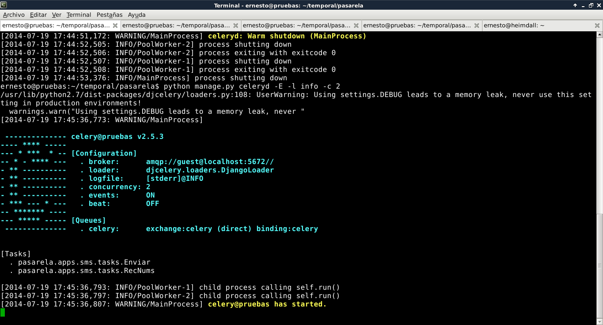
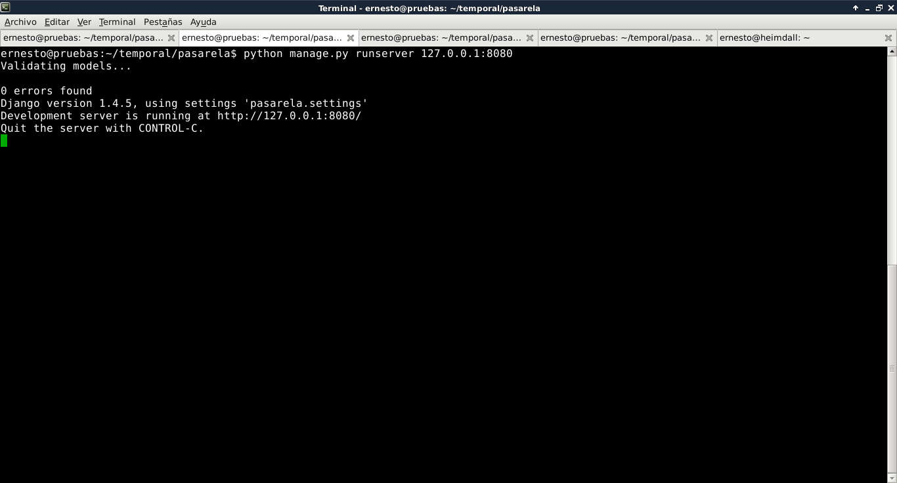
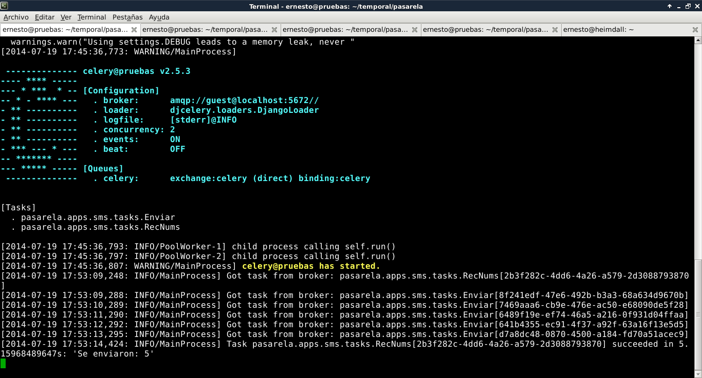

Continuando con los artículos sobre django, en este caso se usará django-celery para envío de mensajes a un servidor kannel (servidor sms) y django-tastypie para mostrar el resultado por medio de API rest full con json.
En los dos artículos anteriores Manejo de colas de RabbitMQ en django con django-celery y
Restfult API con django tastypie se tiene la base de este artículo. Este artículo se basa en el ejemplo de la mensajería sms del artículo de Restfult API con django tastypie (todo el proceso de creación del proyecto y de la aplicación sms fue explicada en ese artículo).
La idea ahora es poder mostrar los sms listados por evento, no es necesario estar creando una tabla que herede de las otras dos, esto será posible gracias a tastypie en una consulta del json.
Se usará como base de datos sqlite3. A continuación se muestra el archivo settings.py:
#Archivo settings.py:
#Configuración de la base de datos sqlite3
DATABASES = {
'default': {
'ENGINE': 'django.db.backends.sqlite3', # Add 'postgresql_psycopg2', 'mysql', 'sqlite3' or 'oracle'.
'NAME': 'sms.db', # Or path to database file if using sqlite3.
'USER': '', # Not used with sqlite3.
'PASSWORD': '', # Not used with sqlite3.
'HOST': '', # Set to empty string for localhost. Not used with sqlite3.
'PORT': '', # Set to empty string for default. Not used with sqlite3.
}
}
#Zona horaria y localización
TIME_ZONE = 'America/Caracas'
LANGUAGE_CODE = 'es-ve'
#Aplicaciones instaladas (djcelery,pasarela.apps.sms,tastypie y south)
INSTALLED_APPS = (
'django.contrib.auth',
'django.contrib.contenttypes',
'django.contrib.sessions',
'django.contrib.sites',
'django.contrib.messages',
'django.contrib.staticfiles',
# Uncomment the next line to enable the admin:
'django.contrib.admin',
'djcelery',
'pasarela.apps.sms',
'tastypie',
'south',
# Uncomment the next line to enable admin documentation:
# 'django.contrib.admindocs',
)
#Conexión al servidor kannel
direccion = "127.0.0.1"
portsms = "13013"
portadmin = "13000"
usuario = "kannel"
clave = "kannel"
----------------------
El archivo pasarela/apps/sms/models.py:
#Archivo pasarela/apps/sms/models.py
from django.db import models
#Se crea la tabla Evento que contiene los campos evento (número del evento), el estatus del mismo (si se #termino el evento o no y si no termino fue por falla o no.
class Evento(models.Model):
evento = models.IntegerField(primary_key=True)
estatus = models.BooleanField(default=False)
def __unicode__(self):
evento = "Evento: %s, Estatus: %s , Falla: %s" %(self.evento,self.estatus,self.falla)
return evento
#Se crea la tabla HistoricoSMS donde se tiene un campo
#foreignkey de la tablla evento, el mensaje, el número de celular, el estatus si se envío o no o si fallo.
class HistoricoSMS(models.Model):
evento = models.ForeignKey(Evento)
mensaje = models.CharField(max_length=150)
numcel = models.CharField(max_length=11)
estatus = models.BooleanField(default=False)
def __unicode__(self):
mensaje = "%s, %s, %s, %s, %s" %(self.evento.evento,self.numcel,self.estatus, self.mensaje,self.falla)
return mensaje
--------------------
Archivo pasarela/apps/sms/admin.py:
#Archivo pasarela/apps/sms/admin.py
#En este archivo se define que las tablas Evento e HistoricoSMS se puedan visualizar desde la #administración de django.
from django.contrib import admin
from pasarela.apps.sms.models import HistoricoSMS,Evento
admin.site.register(HistoricoSMS)
admin.site.register(Evento)
Archivo pasarela/apps/sms/api.py (archivo para crear el api restful de django-tastypie), en este caso tiene varias modificaciones con respecto al artículo anterior sobre tastypie, ahora se agrega la variable filtering(más información sobre filtering en el siguiente enlace) que es un diccionario en cada recurso:
#Se importa de tastypie.resources ModelResource, ALL y ALL_WITH_RELATIONS
from tastypie.resources import ModelResource, ALL, ALL_WITH_RELATIONS
#Se importa del modelo HistoricoSMS y Evento
from .models import HistoricoSMS,Evento
#Se importa fields de tastypie
from tastypie import fields
class EventoResource(ModelResource):
class Meta:
queryset =Evento.objects.all()
resource_name = 'evento'
#Se muestra todos los eventos
filtering = {
'evento': ALL,
}
class SMSResource(ModelResource):
evento = fields.ForeignKey(EventoResource, 'evento')
class Meta:
queryset = HistoricoSMS.objects.all()
resource_name = 'sms'
#De evento se muestra todo con relación a el. de estatus se muestra exactamente lo que se necesita,
#acá también se puede usar para las consultas: ['exact', 'range', 'gt', 'gte', 'lt', 'lte'].
filtering = {
'evento': ALL_WITH_RELATIONS,
'estatus':['exact'],
}
------------------------
El archivo que permite manejar las tareas de celery pasarela/apps/sms/tasks.py:
#Archivo pasarela/apps/sms/tasks.py
from celery import Celery
app = Celery('tasks', broker='amqp://',backend='amqp')
from urllib2 import urlopen
from urllib import urlencode
import urllib2
import json
from time import sleep
from django.conf import settings
from pasarela.apps.sms.models import HistoricoSMS,Evento
#Conexión al servidor kannel (está configuración se puede pasar al archivo settings.py y usarla desde allí
direccion = settings.direccion
portsms = settings.portsms
portadmin = settings.portadmin
usuario = settings.usuario
clave = settings.clave
#Se define una tarea para celery por medio del decorador @task, se recibe un json para luego sea
# procesado.
@app.task
def RecNums(datos):
#Se toma el json y se convierte en un diccionario
diccionario = json.loads(datos)
#Se instancia la clave Evento(tabla Evento).
evento = Evento()
#Se asigna cada variable del diccionario para trabajarlos directamente
for clave in diccionario.keys():
if clave == 'mensaje':
mensaje = diccionario[clave]
elif clave == 'numeros':
numeros = diccionario[clave]
elif clave == 'cantnumeros':
cantnum = int(diccionario[clave])
elif clave == 'evento':
eventoid = int(diccionario[clave])
#Se crea una lista para agregar todos los números de celular a dicha lista
lista = []
for num in numeros: lista.append(str(num))
#A evento.evento se le asigna el id del evento.
evento.evento = eventoid
#Si la lista es distinta a la variable cantnum se envía un mensaje de error, si no se procesa la lista
if len(lista) == cantnum:
#Se envía al proceso Enviar (de celery) cada mensaje con su número celular, esperando un segundo
#para procesar el siguiente.
for i in range(len(lista)):
#Se Envía el mensaje pasando el evento, el número celular de la lista y el mensaje
resultado = Enviar.delay(evento,lista[i],mensaje)
sleep(1)
#Se asigna True al estatus del evento al terminar de procesar los mensajes.
evento.estatus = True
#Se salva los valores en la tabla Evento.
evento.save()
return "Se enviaron: %s" %cantnum
else:
evento.estatus = False
evento.save()
return "Error en la recepcion de los datos"
#Se crea la tarea de celery Enviar donde recibe el número del evento, el número de celular y la cantidad de
#intentos para enviar el sms el valor por defecto es 5.
@app.task
def Enviar(evento,numcel,mensaje,intentos=5):
#Se instancia la clase HistoricoSMS que maneja dicha table de models.py
historico = HistoricoSMS()
#Se le da forma de códificación url al mensaje para eliminar los espacios en blanco del mismo.
form = urlencode({'text': mensaje})
#se define la variable Url donde se tiene el url del servidor kannel donde se le pasa al texto
#el usuario, la clave, el número celular y el mensaje a enviar.
Url = "http://%s:%s/cgi-bin/sendsms?username=%s&password=%s&to=%s&text=%s" % (direccion,portsms,usuario,clave,numcel,form)
#Se maneja una excepción si hay un error de comunicación http.
try:
#Se abre el Url
f = urlopen(Url,timeout=10)
#Se asigna los valores numcel, mensaje y evento al objeto historico.
historico.numcel = numcel
historico.mensaje = mensaje
historico.evento = evento
#Se lee el resultado de abrir el url, si se tiene el mensaje de encolado para enviar más tarde
#se asigna el estatus False y se salva devolviendo el mensaje de no enviado
if f.read() <> '3: Queued for later delivery':
historico.estatus = False
historico.save()
return 'Mensaje no enviado a: %s' %numcel
else:
#Se envío el mensaje se coloca el estatus en True y se salva en la tabla
historico.estatus = True
historico.save()
#Se devuelve el mensaje de mensaje enviado.
return 'Mensaje enviado a: %s' %numcel
except (urllib2.URLError,urllib2.HTTPError),exc:
#Si hay una excepción de error http se reintenta el envío llamando de forma
#concurrente a esta misma función reduciendo el valor de los intentos,
#cuando llegue a cero el número de intentos se devuelve un mensaje de no enviado
if intentos <> 0:
Enviar(evento,numcel,mensaje,intentos-1)
else:
#Se salva los valores en la tabla y devuelve el mensaje de sms no enviado
historico.numcel = numcel
historico.mensaje = mensaje
historico.evento = evento
historico.estatus = False
historico.save()
return'No hay conexion al kannel por puerto o IP, el numero que no se procesaron es: %s' %numcel
----------------------------
A continuación se muestra el contenido del archivo pasarela/urls.py el cual contiene el acceso al API como se explico en el artículo anterior y ahora tiene el acceso a la función que permite recibir los datos para enviar (estos datos se pasan por un json):
#Archivo pasarela/urls.py
from django.conf.urls import patterns, include, url
from djcelery import views as celery_views
from pasarela.apps.sms import tasks
# Uncomment the next two lines to enable the admin:
from django.contrib import admin
admin.autodiscover()
#Se importa Api de tastypie.api
from tastypie.api import Api
from apps.sms.api import SMSResource,EventoResource
v1_api = Api(api_name='v1')
#Se registra los recursos en la instancia del api.
v1_api.register(SMSResource())
v1_api.register(EventoResource())
urlpatterns = patterns('',
# Uncomment the next line to enable the admin:
url(r'^admin/', include(admin.site.urls)),
#Acceso al API
url(r'^api/', include(v1_api.urls)),
#se define enviar que usa la vista de tareas de celery para ejecutar tasks.RecNums
url(r'^enviar/', celery_views.task_view(tasks.RecNums)),
#Consulta a celery si la tarea se ejecuto sin problemas
url(r'^(?P<task_id>[\w\d\-]+)/done/?$', celery_views.is_task_successful,
name="celery-is_task_successful"),
#Consulta de celery para ver el estatus de la tarea
url(r'^(?P<task_id>[\w\d\-]+)/status/?$', celery_views.task_status,
name="celery-task_status"),
)
-----------------------
La base de datos se sincroniza como se explicó en los artículos anteriores, ahora toca ejecutar en modo pruba django-celery, django como tal y abrir un interprete de comandos para django.
Ejecución de django-celery con dos colas de rabbitMQ y en modo info:
python manage.py celeryd -E -l info -c 2
A continuación captura de pantalla de la ejecución:

Note que se tienen 2 tareas en el celery:
- pasarela.apps.sms.tasks.Enviar
- pasarela.apps.sms.tasks.RecNums
Ahora se ejecuta django en el 127.0.0.1 y puerto 8080:
python manage.py runserver 127.0.0.1:8080
A continuación una captura de pantalla de la ejecución del comando:

Y por último se ejecuta el comando para tener un shell interfactivo de django: python manage.py shell A continuación la captura de pantalla:

Ahora se ejecutará en el shell una prueba que simula la recepción por parte de la tarea del json que recibe de una aplicación externa para enviar los sms: Hay que acotar que los números de celular de la prueba no corresponden a números reales o de proveedores de teléfonía celular.

Ahora para complementar la idea de consulta API restful por json del artículo anterior la idea es listar los números celulares que se enviaron del evento 6, en este caso se usará el programa curl: curl http://127.0.0.1:8080/api/v1/sms/?evento=6 El resultado es:
{"meta": {"limit": 20, "next": null, "offset": 0, "previous": null, "total_count": 5}, "objects": [{"estatus":true, "evento": "/api/v1/evento/6/", "id": "21", "mensaje": "Esta es una prueba de sms", "numcel": "14225673531", "resource_uri": "/api/v1/sms/21/"}, {"estatus":true, "evento": "/api/v1/evento/6/","id": "22", "mensaje": "Esta es una prueba de sms", "numcel": "142165673531", "resource_uri": "/api/v1/sms/22/"}, {"estatus": true, "evento": "/api/v1/evento/6/","id": "23", "mensaje": "Esta es una prueba de sms", "numcel": "14265673531", "resource_uri": "/api/v1/sms/23/"}, {"estatus": true, "evento": "/api/v1/evento/6/", "id": "24", "mensaje": "Esta es una prueba de sms", "numcel": "14145673531", "resource_uri": "/api/v1/sms/24/"}, {"estatus": true, "evento": "/api/v1/evento/6/","id": "25", "mensaje": "Esta es una prueba de sms", "numcel": "14245673531", "resource_uri": "/api/v1/sms/25/"}]}
Por último se muestra la captura de pantalla de lo que se genera en el djcelery:

En el próximo artículo se mostrará el acceso a las tareas de celery desde el URL definido en urls.py.
¡Haz tu donativo! Si te gustó el artículo puedes realizar un donativo con Bitcoin (BTC) usando la billetera digital de tu preferencia a la siguiente dirección: 17MtNybhdkA9GV3UNS6BTwPcuhjXoPrSzV
O Escaneando el código QR desde la billetera:

Comments !